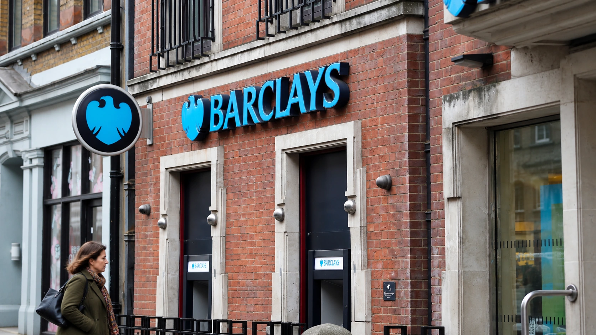

Barclays Lifts Quarterly Profit 12% and Announces a £500 Million Buyback
Higher profit and a new buyback contrast with uneven trading revenue, showing why growth alone does not settle an earnings assessment.

Barclays reported third-quarter pre-tax profit of £2.3 billion on Thursday, up 12% from a year earlier, and announced a £500 million share buyback. The result combines growth in earnings with another distribution to shareholders. It also contains a less favorable comparison: profit was below the roughly £2.4 billion expected in the bank’s company-compiled consensus.
The difference between annual growth and performance against expectations matters. A bank can earn more than it did a year ago and still disappoint investors who had priced in a stronger result. Barclays’ quarter offers a useful example of why an earnings headline needs both comparisons, rather than treating a positive growth rate as a complete assessment.
Trading desks move in different directions
Investment-bank income was £3.1 billion, compared with forecasts of £3.3 billion, Reuters reported. Equities trading revenue rose 47%, while fixed-income trading income fell 19%. The contrast shows how the label “investment banking” can conceal sharply different conditions across businesses operating inside the same institution.
An equities desk and a fixed-income desk serve different customer needs and respond to different market conditions. Revenue also depends on client activity, financing, execution and the risks a bank takes to facilitate trades. A busy stock market therefore does not establish that every part of a diversified trading operation will benefit equally.
The practical analytical task is to separate a broad improvement in the franchise from strength concentrated in one line of business. If growth depends heavily on one activity, the next quarter may be more sensitive to a change in that activity. This is a question about the durability and mix of earnings, rather than a prediction that a strong trading desk must reverse.
A buyback is a use of capital
The Wall Street Journal reported that the new repurchase program was smaller than the £579 million in the company-compiled consensus. A buyback announcement can consequently carry two messages at once: management is allocating capital to shareholders, but the amount may differ from what investors anticipated. The size should be assessed alongside profitability and the capital the bank needs to retain.
Repurchases involve buying shares from investors willing to sell. When shares are subsequently retired, the remaining owners hold a larger proportion of the business, all else equal. The company also parts with cash or other available resources. The transaction changes the balance between the number of shares and the assets supporting them; it does not create operating revenue.
That distinction is especially relevant for a bank. Capital supports its ability to absorb losses and conduct business. Distributing more of it can benefit shareholders, but retaining it can support lending, resilience or future investment. The appropriate balance depends on the bank’s requirements and opportunities, rather than the assumption that the largest possible buyback is always the strongest outcome.
For the mechanics, see how share buybacks affect ownership and per-share figures. A rise in earnings per share driven partly by a smaller denominator should be distinguished from growth in the total profit earned by the business.
Costs and the next evidence to watch
Reuters also reported £201 million of structural cost actions in the quarter. Such spending makes the timing of a cost program important: a charge can reduce current earnings while management seeks savings later. Whether those savings arrive, and whether the business can maintain service and revenue while changing its operations, are separate questions.
For the next reporting period, the useful checks are the breadth of income growth, the cost base after restructuring and the relationship between distributions and retained capital. A single profitable quarter cannot establish that a cost program has delivered its intended return. Equally, a current charge does not demonstrate that the program has failed.
U.S. readers can follow Barclays through its BCS depositary receipts on the New York Stock Exchange. The operating figures in this report are in pounds sterling; a dollar-denominated security quotation is a different measurement. Keeping that distinction clear helps avoid mixing the bank’s financial performance with currency movements or the trading price of its U.S. listing.
Sources and methodology
Sources checked October 22, 2026. Reported findings and company or regulatory statements are attributed in the text; discussion of financial implications is editorial analysis. The generated cover is illustrative.